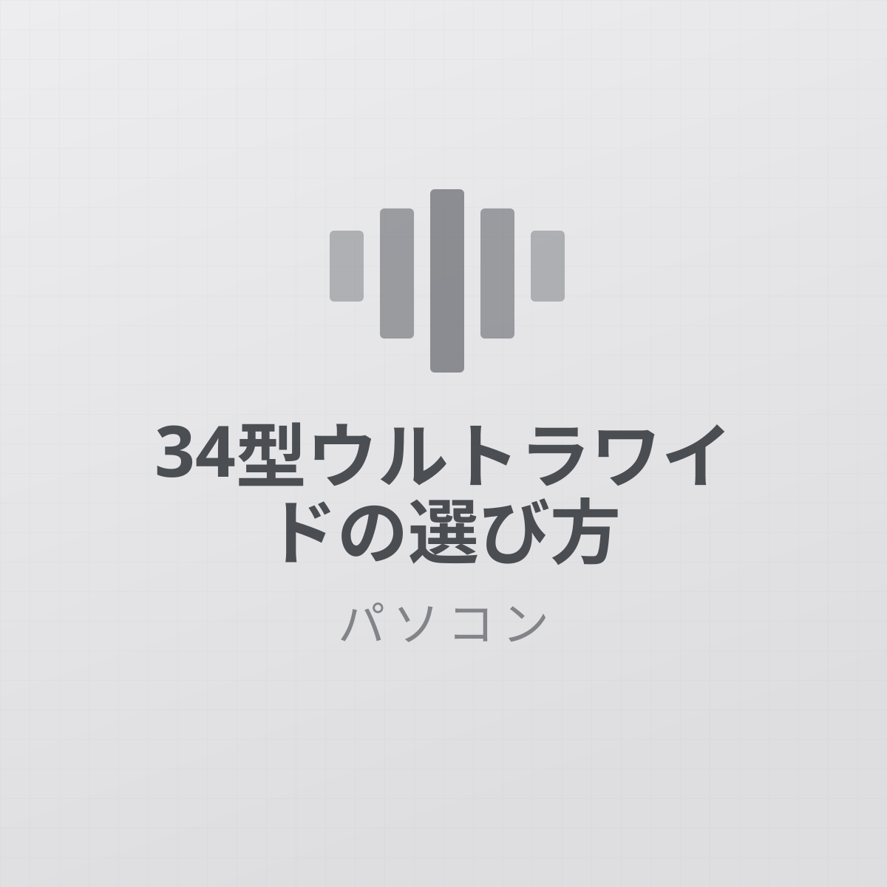
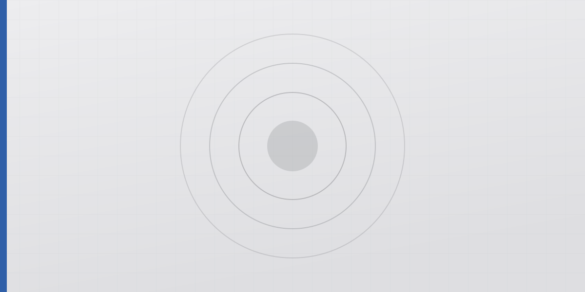
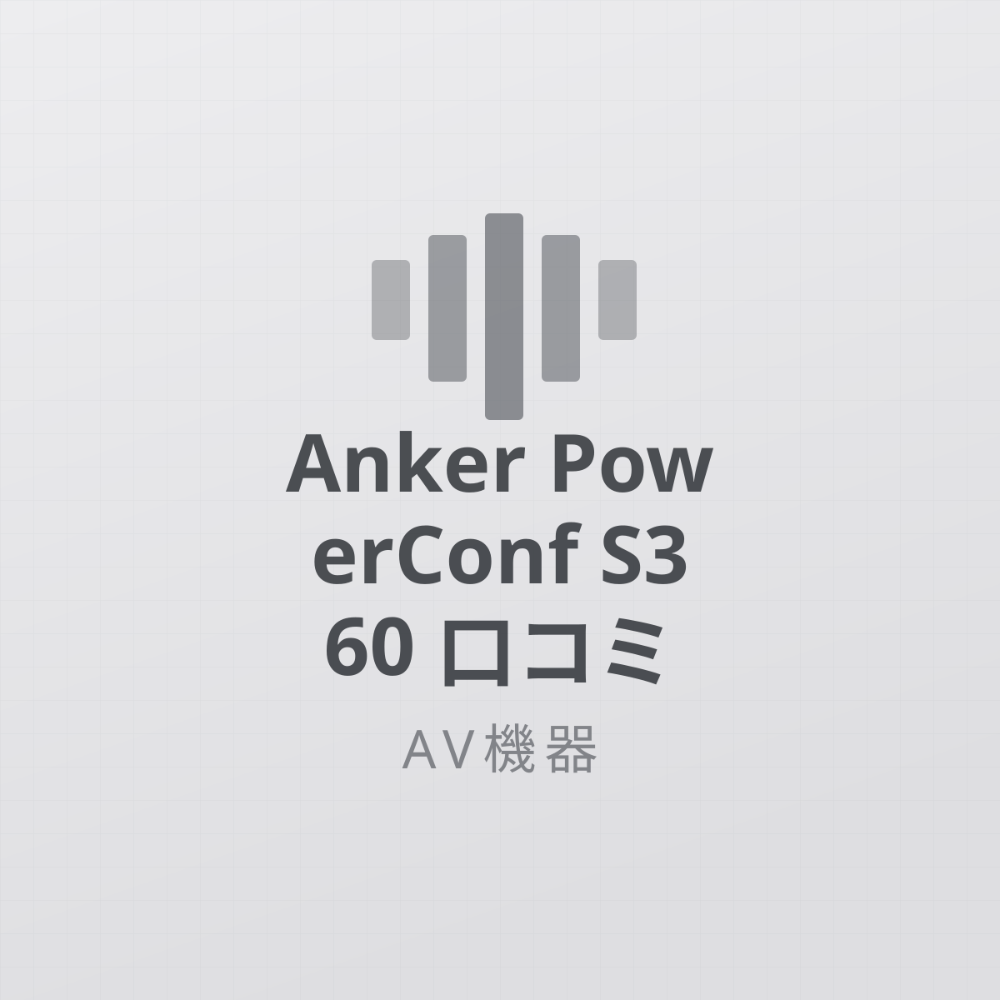

USB-Cドッキングステーションは1本化に見合うか
ケーブル1本化は快適。ただし「何画面出せるか」はPC側の仕様で決まります。
お知らせ 当サイトの記事には広告（Amazonアソシエイト等）を含みます。掲載価格・在庫は執筆時点のもので、最新情報は販売ページをご確認ください。
イヤホン、キーボード、モニター、充電器など。毎日使うものだからこそ、実際に使い込んでから良い点も気になる点も正直にお伝えします。
全 9 記事ケーブル1本化は快適。ただし「何画面出せるか」はPC側の仕様で決まります。

静音クリックとホイールが本体。ただし大きく重いので、持ち方によっては合いません。

容量・ワイヤレス充電・明るさ自動調節。差額に見合う人の条件を整理しました。

赤外線が届くかどうかが全て。設置場所を先に決めないと動きません。

回線が遅いままなら速くなりません。効くのは「同時接続の多い家」です。

ベゼルが消えるのが本質。ただし机の奥行きと文字サイズは事前に検討が要ります。

音が良くなるのではなく、口元にマイクが来ることで別物になります。

1人ならヘッドセットで足ります。複数人が同じ部屋にいる会議で意味が出ます。

通知と睡眠・歩数の記録が目的なら足ります。医療用途と決済には期待しないこと。